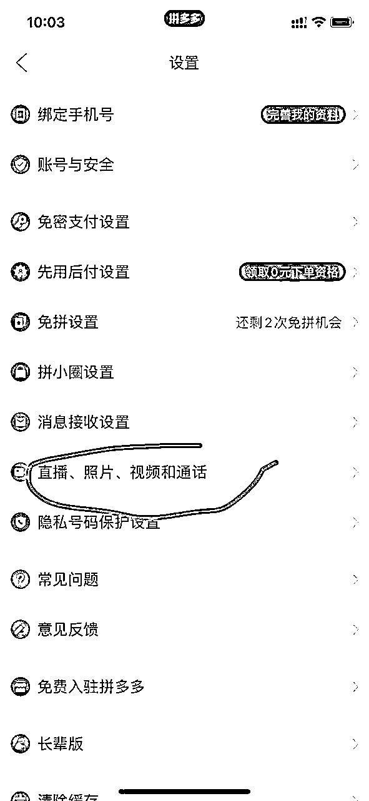
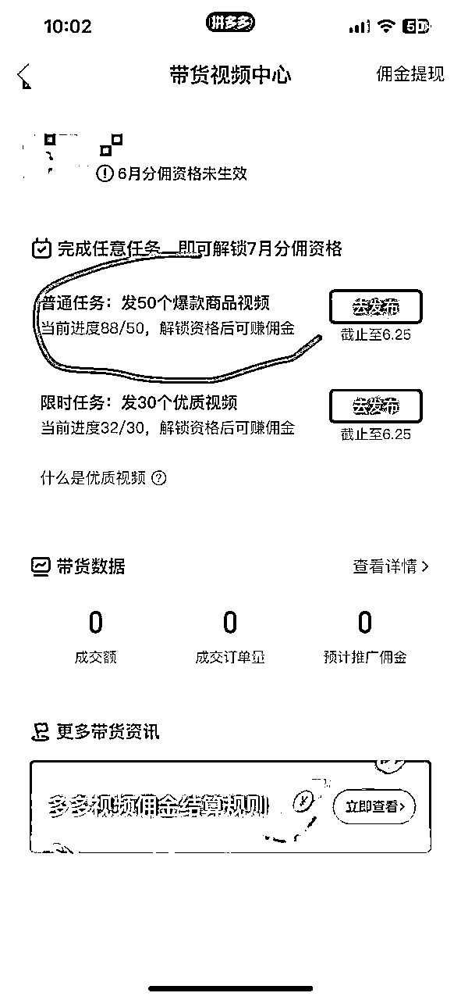

来源：https://qrto9cl5vl.feishu.cn/docx/Ip5tdOqavoAtEbxcGSocXNASn3g
大家好.我是G，满打满算，在互联网摸爬滚打5、6年。
从大一开始做过淘宝刷丹，返利机器人，呆萌价，开始并不了解什么社群，只知道在自己的圈子，赚点就知足，有点井底之蛙。
去年的到现在一直在搞视频号，没把多多视频这个项目重视起来，因为当时视频号真的太火爆了 ，让我一个普通人，体验了一天收入2w，纯自然流量，没有任何投资的情况下的快感，视频号总gmv60多万，实现变现15w＋
当时也已经在做多多视频，每天也就零零散散状态，根本没有重心放在上面，直到今年说实话，视频号的红利
期，已然逝去，我不得不重新操练起来多多视频。
我听到太多人说多多视频已经没法做了，或者说红利期也已经过了，也有很多大佬看不上这个项目，这项目本身成就不了太大的气候。
不像抖音，视频号那样日入斗金，他不是一个特别暴利的项目，但他却是一个相对稳定简单容易上手的项目。
提起短视频带货，大家首先想到的是抖音带货，流量大，也有暴富的机会。
但是大家其实忽略了多多视频这个平台，收益同样不低。
跟抖音的视频带货原理上差不多，注册多多视频号，发布带货视频添加商品小黄车变现逻辑也很简单，在拼多多
APP下面的第二个选项就是多多视频的入口。
在用户刷视频的过程中，系统会根据用户之前看过的产品，给用户推送类似产品的带货视频，进而促进转化。
视频左下角会弹出这种商品卡片，整个购买转化的流程非常丝滑，当用户买完你挂车的产品，你就能拿到佣金了。
下面开始分享实操过程，我从第一步给大家讲起，兄弟们试着做可以拿到结果。
有苹果手机优先苹果手机发布视频，个人感觉苹果手机发布视频更流畅，当然安卓手机也是可以的，只是个人感觉快一些。
这是咱们做这个多多视频项目，用来查看佣金的后台，做过淘宝客的应该知道，这个就相当于一个淘宝联盟的存在。
多多进宝app直接应用市场搜索就可以 ，下载好以后注册，注意要用自己常用手机号注册，用来登陆，以后比较方便，也可以设置上密码，注册好以后，给多多进宝实名制，绑定上自己的银行卡，用于以后提现。
一般实名的话三个工作日内审核，等待即可，下面是具体操作，
多多进宝实名制以后，然后开始进行与自己的账号pid绑定，具体操作如下
还有一个小步骤，为了防止发布过视频再次保存到手机上，我们需要把这个选项关掉，按钮灰色为关掉，

以上所有操作全部完成以后我们这就是一个正常的 账号了。
接下来就是爆款视频了，有人不知道什么是爆款，给大家讲一下。
多多视频在获取带货资格的上，一个月需要发布50个爆款带货视频，审核通过，才可以进行下个月带货，爆款在哪看操作如下：
首先点击发布 然后点击带货 然后有一个选项栏 热门爆款 里面的爆款商品 去其他平台《抖音，快手》找与爆款商品符合的视频进行发布，审核通过，即可成为一个爆款视频。
当天发布的爆款视频，由第二天或者第三天审核节假日顺延。
就是我们在找视频的时候，无论是布爆款视频或者发布平时的带货视频，都不要涉及第三方信息，这样的视频会被多多秒pass。
何为第三方？
就是视频提到其他平台软件比如快手，抖音 又或者提及左下角小黄车下单 都是不允许的，大家一定要注意这个点。
多多视频不像其他短视频平台，需要一机一号，网络环境，养号一周，统统不需要，我一个手机6个号，流量根本不影响。
只有一个那就是过爆款视频，有太多人难在这，不知道发什么品通过爆款率高，不知道如何去找爆款，反而被项目劝退。
现在我们已经测出三天过70爆款的方法，多多视频爆款指的是我们需要在平台里面发布50个爆款视频，带上爆款货品，视频审核通过后算生效一个，需要在每个月25号之前通过，下个月方可获得带货资格。
例图如下：

1、注册账号注册多多视频其实就是注册拼多多账号，手机、微信号、QQ号都可以注册。经过测试，目前一台手机
可以同时操作三个账号没有问题。
2、申请带货资格想通过多多视频带货，首先要获得带货资格，也就是在每个月的25日之前发布50个爆款视频，即
可获得下个月的带货资格。
为了防止，有的爆款商品，今天是爆款，明天就不是了，又或者今天发了50个，有的视频没审核通过。
所以我给大家的建议是发到通过视频数量75以上，这样是肯定会有的。
多多视频每个账号的上线是50个视频，在发布时候每天怼50个爆款就可，三天可过，我个人操作，3个号150个视频差不多一小时操作完成。
下图是商品没审核通过，或者视频没审核通过 ，直接不用理会，也不用去删除视频，继续操作发布就可以
前期新手起号建议大家第一次起2个号，先通过手机去发布，2个号手机是完全可以操作的，等到拿到结果，可增加账号。
然后号多了自然工作量增加，可利用软件进行发布，省去人工时间，当然少于四个号就手动发布就可以了，完全可以操作下来。
抖音、快手这些平台，对视频的原创要求高，已经过了几年前无脑搬运视频的时期了。
而多多视频现在还处于无脑搬运的视频的时期，除了多多视频本身处于发展阶段外也是因为多多视频带货的逻辑跟
其他平台有区别，不是视频带动流量，而是靠商品卡片带动流量。
所以目前对视频的原创度基本没有限制，只要无脑下载他人的带货视频上传即可。正因为这个优点，所以这个项目可以说是目前门槛最低的短视频带货项目，谁都可以轻松上手。
只要勤劳，每天坚持发视频，时间多的多做几个账号，一个月赚个上大几千难度不大，并且我会提供一些爆款产品和视频，提高大家爆单的概率。
多多视频，该如何选品，什么品有流量 两个要素：在拼人数 商品评论数量 。
本着这个原则去选品，不爆也难，很多朋友发了3-5天没有任何流量，就放弃了，可是大家不知道的一个逻辑，拼
多多有拼多多的玩法。
这个平台长尾流量特别强，我去年发的作品今年仍然有出单，这是其他任何一个平台达不到的，带货作品也不会当下爆会缓慢个2.3天，对于已经正常有带货资格的号。
我的个人建议，每天怼满30个视频，一个品10-15个作品 一天一个账号2-3个品.批量时代还没有过去，实测可行。
目前我是4个账号在正常运行 然后这个月又加了2个想再继续扩大，上面的收益图是视频爆了，所以当天佣金在几千。
平时的话4个号每日佣金在150-300之间，如果视频爆了另算，新手第一个月话的话可能数据会差一些但是一定要坚持，好好做第一个月几百块收益是没问题的。
举个例子，我现在一个朋友，他一个打工人，平时也就只能下班了发发视频，4个月收益5000＋ 他只有一个账号，还总跟我说没时间发。

然后另外一个朋友，在获取带货资格的当月里，一个8个粉丝的账号，发布的视频成为了爆款，更是大大增加了项目的信心
这个项目不需要你直播，也不需要你会剪视频，更不需要会运营，只需要无脑跟着教程发视频即可，唯一需要的就是时间，非常适合有时间又想额外赚点钱的朋友，完全是多劳多得。
不说多，只要坚持做，勤奋做，一月几百几千还是不难的，运气好一月大几千上几万的也挺多。
【预防针】第一个月是起号期，流量一般，但收益最差最差也有几十块打底，按大多数人的平均水平来看。
基本上一个号，一个月，都能搞个几百块，想多赚的，加号就完事了。
为什么我觉得这个项目稳定呢，他本身每天不会消耗我太多的时间，每天都会给我带来收入，我也不用再去过度的
研究他的逻辑，无论多也好少也好他稳定了我接近一年。
以上就是我对多多视频整个项目的一些心得，希望可以帮助到大家，大家有更好的逻辑方法欢迎交流互相学习，
每个人都可以做的一个项目，看了文章大家都可以尝试，一个适合小白的项目，只要用心去做，有执行力，都可以
拿到结果。
我是一名00后，目前在做多多视频带货，视频号带货，私域运营，欢迎圈友一起交流，共同进步，就分享到这里啦。